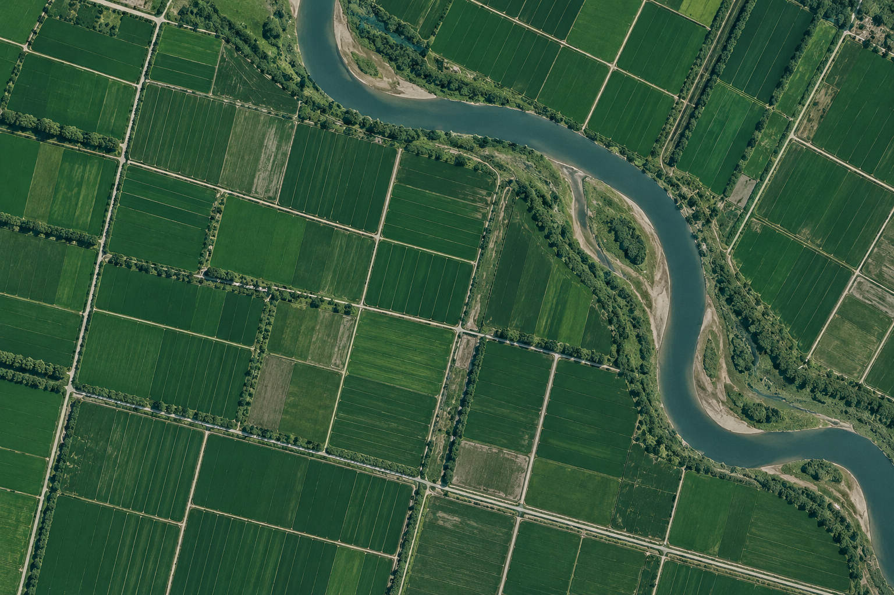
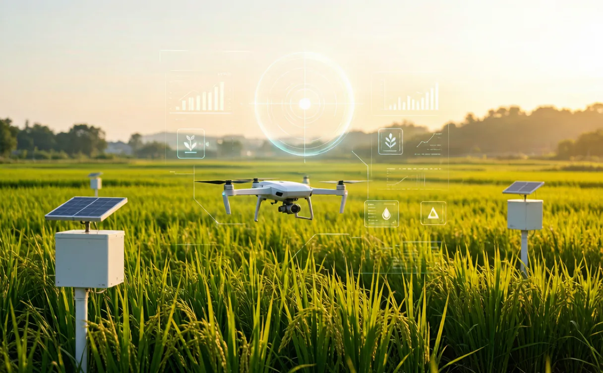

地块统计（示例）
- 总面积—
- 倒伏面积—
- 倒伏比例—
- 地块数量—
全国重点实验室特色资源
查找用于作物长势分析、倒伏识别等生产问题的模型，获取农业研究数据，了解开放课题与科研合作机会。
特色数据集
汇集多源时空数据，面向农业生产记录完整，支持农业研究与模型验证。

样点 A 样点 B 样点 C课题指南
面向农业与科研院所发布农业研究方向，查看申报条件、材料要求与参与流程。
通知公告
实验室示范基地
展示实验室田间科研与示范条件，欢迎科研团队咨询合作。

场景示意